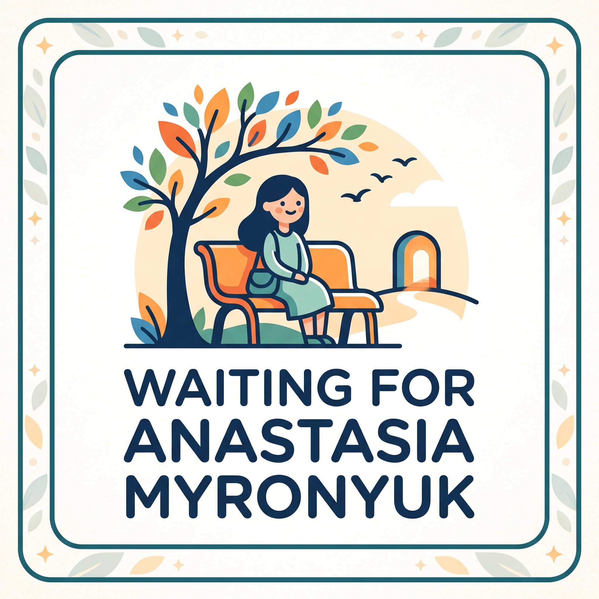

Головна хірургічна подія року серед медичної молоді України The premier surgical event of the year for medical youth in Ukraine
Кафедра хірургії з курсом гепатобіліарної та судинної хірургії щиро запрошує Вас до участі у головній хірургічній події року серед медичної молоді —
I Всеукраїнському студентському хірургічному форумі (USSF).
Сучасна хірургія стрімко еволюціонує: на стику класичних операційних технік, цифрових технологій, молекулярної патоморфології та принципів доказової медицини народжуються нові стандарти порятунку життів. Наш Форум — це унікальний мультидисциплінарний майданчик, покликаний об'єднати майбутню хірургічну еліту України, надати простір для презентації сміливих наукових рішень, палких фахових дискусій та відпрацювання практичних навичок під керівництвом провідних фахівців.
Department of Surgery with the Course of Hepatobiliary and Vascular Surgery cordially invites you to participate in the premier surgical event of the year for medical youth —
the 1st All-Ukrainian Student Surgical Forum (USSF).
Modern surgery is rapidly evolving: at the intersection of classical operative techniques, digital technologies, molecular pathomorphology, and evidence-based medicine, new benchmarks for life-saving care are established. Our Forum is a unique multidisciplinary hub designed to unite the future surgical elite of Ukraine, offering a stage for daring research presentations, dynamic discussions, and rigorous practical training guided by national leaders in the field.
Найстаріше студентське наукове товариство Східної Європи, яке цього року відзначає 145-річчяThe oldest student scientific society in Eastern Europe, which is celebrating its 145th anniversary this year
Провідний заклад вищої медичної освіти України з понад 180-річною історієюUkraine's premier medical university with over 180 years of excellence
Опорна кафедра хірургічного профілю, центр інновацій та підготовки молодих хірургівReference surgical department, hub of innovation and surgical training
Директор Навчально-наукового інституту медицини НМУ імені О.О. Богомольця, професор кафедри загальної та невідкладної хірургії, доктор медичних наук, професор. Director of the Educational and Scientific Institute of Medicine of Bogomolets NMU, Professor of the Department of General and Emergency Surgery, MD, Dr. Med. Sci., Professor.
Завідувач кафедри хірургії з курсом гепатобіліарної та судинної хірургії, доктор медичних наук, професор, заслужений лікар України, головний редактор журналу «Загальна хірургія». Head of the Department of Surgery with Course of Hepatobiliary & Vascular Surgery, MD, Dr. Med. Sci., Professor, Honored Doctor of Ukraine, Editor-in-Chief of "General Surgery" Journal.
До складу комітету входять завідувачі хірургічних кафедр та керівники студентських наукових гуртків НМУ імені О.О. Богомольця. The committee also comprises the heads of surgical departments and student scientific society directors of Bogomolets NMU.
Виступ на секційному засіданні, участь у дискусії та публікація наукових тез в офіційному збірнику форуму.Oral presentation in the thematic section, participation in panel discussions, and abstract publication in the official conference proceedings.
Воркшопи + сертифікат за участьWorkshops + participation certificateЗаочна участь з публікацією авторського дослідження чи клінічного спостереження в офіційному збірнику форуму.Distant participation with publication of original research or clinical case in the digital book of abstracts.
Сертифікат за публікаціюCertificate of PublicationОчна або онлайн присутність на секційних засіданнях, участь у наукових дискусіях та нетворкінг з провідними фахівцями.On-site or online attendance across plenary and sectional sessions, active participation in scientific discussions and networking.
Очно або ZoomIn-person or ZoomЕтапне хірургічне лікування політравми, проникаючих поранень грудної та черевної порожнин. Хірургічна тактика на етапах медичної евакуації та в умовах стабілізаційних пунктів.Staged surgical management of polytrauma, penetrating thoracic and abdominal injuries. Tactical decision-making during medical evacuation and at stabilization points.
Хірургічні методи зупинки масивних ургентних кровотеч. Особливості виконання судинного шва, аутовенозної пластики та тимчасового шунтування при мінно-вибухових пораненнях кінцівок.Surgical techniques for massive urgent hemorrhage control. Vascular suture techniques, autovenous grafting, and temporary vascular shunting in blast and gunshot limb injuries.
Хірургічна обробка вогнепальних ран, тактика лікування розтрощених переломів. Профілактика синдрому тривалого стиснення (краш-синдрому), покази та техніка виконання розвантажувальних фасціотомій.Debridement of gunshot wounds, management of comminuted fractures. Prevention of crush syndrome, indications and techniques for emergency decompression fasciotomy.
Хірургічне усунення складних анатомічних дефектів після масивних травм та вторинних інфекційних процесів. Відновлення анатомічної цілісності покривних тканин.Surgical coverage of complex anatomical defects following massive trauma and secondary infection. Restoring structural integrity of soft tissues.
Аутотрансплантація комплексів тканин (вільні та переміщені клапті), формування мікросудинних анастомозів. Реплантація сегментів кінцівок, відновна хірургія периферичних нервів.Tissue autotransplantation (free and pedicled flaps), microvascular anastomoses. Replantation of severed extremities, reconstructive peripheral nerve repair.
Тактика при глибоких термічних, хімічних та електричних опіках. Рання некректомія, ксенотрансплантація, інноваційні технології аутодермопластики та клітинної терапії.Management of deep thermal, chemical, and electrical burns. Early necrectomy, temporary coverage, xenografting, modern autodermoplasty, and regenerative cell therapies.
Новітні алгоритми діагностики та лікування гострого апендициту, холециститу, деструктивного панкреатиту, гострих шлунково-кишкових кровотеч, кишкової непрохідності та перфоративних виразок.Updated diagnostic and therapeutic pathways for acute appendicitis, cholecystitis, necrotizing pancreatitis, acute gastrointestinal bleeding, bowel obstruction, and perforated peptic ulcers.
Стратегії багатоетапного хірургічного лікування, методики програмованих санацій черевної порожнини та вакуумних систем (NPWT). Критерії інтенсивної терапії септичного шоку.Multi-stage surgical strategies, scheduled peritoneal lavage, and Negative Pressure Wound Therapy (NPWT). Diagnostic and intensive care standards for abdominal sepsis and septic shock.
Сучасні пластики пахвинних, вентральних, післяопераційних та параколостомічних гриж. Лапароскопічні методики (TAPP, TEP, IPOM) та корекція гриж стравохідного отвору діафрагми.Current repair techniques for inguinal, ventral, incisional, and paracolostomy hernias. Laparoscopic approaches (TAPP, TEP, IPOM) and surgical treatment of hiatal hernias.
Хірургічне лікування ускладненої жовчнокам'яної хвороби (біліарна обструкція), доброякісних вогнищевих уражень печінки (кісти, аденоми, ФНГ), хронічного панкреатиту та псевдокіст.Management of complicated gallstone disease (biliary decompression), benign liver lesions (cysts, adenomas, FNH), chronic pancreatitis, and pancreatic pseudocysts.
Сучасні технології лікування геморою, анальних тріщин, нориць прямої кишки та ЕКХ. Хірургія дивертикульозу, реконструктивне лікування неспецифічного виразкового коліту та хвороби Крона.Advanced therapies for hemorrhoids, anal fissures, complex fistulas, and pilonidal disease. Diverticular surgery, minimally invasive and reconstructive treatment of UC and Crohn's disease.
Хірургічні методи лікування морбідного ожиріння (Sleeve-резекція, шунтування). Довгострокові метаболічні ефекти та хірургічне досягнення стійкої ремісії цукрового діабету 2 типу.Surgical interventions for morbid obesity (Sleeve gastrectomy, gastric bypass). Metabolic mechanisms in achieving durable remission of type 2 diabetes and metabolic syndrome.
Топографо-анатомічні особливості радикального лікування раку шлунка, ободової та прямої кишки (D2/D3 лімфодисекція). Роль лапароскопічних та робот-асистованих втручань.Anatomical considerations in radical surgery for gastric, colon, and rectal malignancies (D2/D3 lymphadenectomy). The expanding role of laparoscopic and robotic platforms.
Хірургічне лікування новоутворень легень, плеври та середостіння. Сучасні торакоскопічні резекції легень (VATS) та онкохірургія раку стравоходу.Surgical approaches to lung, pleural, and mediastinal neoplasms. Video-assisted thoracic surgery (VATS) resections and modern surgery for esophageal cancer.
Радикальні анатомічні та розширені резекції печінки при первинному раку та метастазах. Панкреатодуоденальні резекції (операція Віппла) при пухлинах підшлункової залози.Radical anatomical liver resections for primary liver cancer and colorectal metastases. Pancreaticoduodenectomy (Whipple procedure) for periampullary tumors.
Хірургічні та топографо-анатомічні аспекти трансплантації нирки й печінки від живого родинного та посмертного донорів. Судинні реконструкції при заборі та імплантації.Surgical and anatomical aspects of kidney and liver transplantation from living-related and deceased donors. Vascular reconstructions during harvesting and implantation.
Диференційна діагностика та тактика при гормонально активних (феохромоцитома, альдостерома) та неактивних пухлинах наднирників. Лапароскопічна адреналектомія.Diagnostic pathways and surgical strategies for functional (pheochromocytoma, aldosteronoma) and silent adrenal tumors. Laparoscopic adrenalectomy techniques.
Принципи хірургічного лікування раку щитоподібної залози та доброякісних вузлів. Лікувально-діагностична тактика при первинному, вторинному та третинному гіперпаратиреозі.Surgical management of thyroid carcinoma and multinodular goiter. Contemporary strategies for primary, secondary, and tertiary hyperparathyroidism.
Другий день форуму цілковито присвячений відпрацюванню практичних навичок у невеликих групах на сучасному тренажерному обладнанні хірургічних кафедр та симуляційного центру НМУ імені О.О. Богомольця під персональним керівництвом провідних викладачів та хірургів. The second day is entirely devoted to hands-on skill workshops in small groups using state-of-the-art surgical simulators under the direct mentorship of leading professors and surgeons.
Архітектурна схема розташування пленарних та секційних аудиторій, хірургічного симуляційного центру воркшопів, зон реєстрації та евакуаційних виходів (Морфологічний корпус НМУ імені О.О. Богомольця, просп. Берестейський, 34). Architectural floor layout of scientific session halls, surgical simulation workshop center, registration lobby, and emergency evacuation exits (NMU Morphological Building, 34 Beresteiskyi Ave).
Пленарне відкриття · Секція 1: Бойова травма (350+ місць) · Прямі виходи назовніPlenary Opening · Section 1: Combat Trauma (350+ seats) · Direct exits
Головний вхід (турнікети) · Стійка оргкомітету · Реєстрація · Гардероб · МедпунктMain entrance · Registration desk · Cloakroom · First aid post
Секція 2: Невідкладна та планова хірургія черевної порожнини (120 місць)Section 2: Abdominal Surgery (120 seats)
Секція 3: Онкохірургія та трансплантологія (120 місць)Section 3: Oncosurgery & Transplantation (120 seats)
Стендові доповіді (постери) · Кава-брейк · Нетворкінг · Евакуаційні сходиPoster session · Coffee breaks · Networking · Evacuation stairs
День 2: Хірургічні воркшопи (лапароскопія, судинний шов, FAST УЗД, NPWT) · Евакуаційні сходиDay 2: Practical Surgical Workshops (laparoscopy, vascular suture, FAST US, NPWT)
До виступу та публікації допускаються всі види авторських наукових робіт, які оформлені у форматі тез: експериментальні дослідження, клінічні кейси та серії спостережень, обсерваційні дослідження, систематичні огляди та мета-аналізи.All types of original scientific contributions are eligible: experimental trials, clinical cases and case series, observational cohort studies, systematic reviews, and meta-analyses.
Заповніть реєстраційну картку учасника з контактними даними, оберіть тематичну секцію форуму та прикріпіть файл із тезами вашої наукової доповіді відповідно до вимог оформлення.Fill out the participant registration form with your contact data, choose your preferred thematic section, and upload your abstract document according to formatting guidelines.
Усі подані тези проходять рецензування науковим комітетом форуму. Після затвердження ви отримаєте офіційне запрошення та деталі виступу або доступу до трансляції.All submitted abstracts undergo blind review by the scientific committee. Upon acceptance, you will receive an official invitation and presentation schedule.
Берестейський проспект (просп. Перемоги), 34, м. Київ, Україна, 03057 34, Beresteiskyi Avenue, Kyiv, Ukraine, 03057